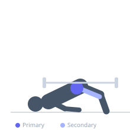
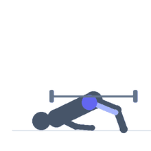

Exercise guide / Glute Bridge
Glute Bridge
The glute bridge is a bodyweight or lightly loaded hip extension exercise performed flat on the floor. It is an accessible entry-level glute activation exercise that trains the glutes through hip extension and is frequently used in warm-ups, rehabilitation, and beginner training programs before progressing to the barbell hip thrust.
Primary muscles
gluteus maximus
Secondary muscles
biceps femoris long head
semitendinosus
Stabilizers
transverse abdominis
Equipment
No Equipment (Bodyweight)


Starting position
- Lie on your back with knees bent at approximately 90 degrees and feet flat on the floor hip-width apart. Arms at the sides.
Setup
- No equipment needed. Can be performed anywhere. Place feet close enough that heels are under or slightly behind the knees.
Steps
- Press through the heels and squeeze the glutes to lift the hips toward the ceiling.
- At the top, the body from knees to shoulders forms a straight line.
- Hold the top position and squeeze the glutes firmly for one to two seconds.
- Lower the hips under control back toward the floor.
Coaching cues
- Squeeze your glutes — do not just raise your hips
- Imagine you are trying to push your hips through the ceiling
Breathing
- Exhale on the hip drive up. Inhale on the descent.
Range of motion
- Full hip extension at the top, hips nearly touching the floor at the bottom.
Tempo
- 1-2-1-0
Common mistakes
- Thrusting with the lower back rather than squeezing the glutes
- Feet too far from the body — this reduces glute activation
Safety
- Safe for most populations including beginners and those in rehabilitation
Training
- hypertrophy: 15–25 reps
- endurance: 20–30 reps
- hypertrophy: 3–4 sets
- endurance: 2–3 sets
- Rest: {'hypertrophy': 60, 'endurance': 30}